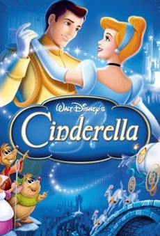

Contexto do filme Cinderela (1950)
O filme Cinderela, lançado pela Disney em 1950, foi produzido em um momento crítico da história do estúdio. Após a Segunda Guerra Mundial, a Disney enfrentava dificuldades financeiras e precisava desesperadamente de um sucesso comercial. Apostar na adaptação de um conto de fadas clássico, com apelo universal e uma narrativa simples, foi uma estratégia para reconquistar o público e recuperar sua estabilidade econômica. Inspirado no conto europeu popularizado por Charles Perrault, o filme mistura elementos mágicos e moralistas, refletindo valores da época em que foi produzido. A animação marcou uma nova era de sucesso para o estúdio, ajudando a consolidar o padrão das "princesas Disney".
Crítica Social do Filme
Embora seja um conto encantador, Cinderela também pode ser analisado criticamente sob uma perspectiva social. O filme reforça a ideia de que a beleza, a obediência e a passividade feminina são recompensadas com o “final feliz” do casamento. Cinderela, apesar de bondosa, é retratada como alguém que espera ser resgatada, sugerindo que a salvação da mulher depende de um príncipe ou figura masculina. Além disso, o papel das outras mulheres (a madrasta e as meias-irmãs) é negativo, o que pode ser interpretado como um reflexo de rivalidades femininas promovidas pela cultura patriarcal. O filme também transmite a ideia de ascensão social através do matrimônio, não pelo esforço próprio ou independência, algo que hoje é criticado por promover visões limitadas do papel feminino na sociedade.